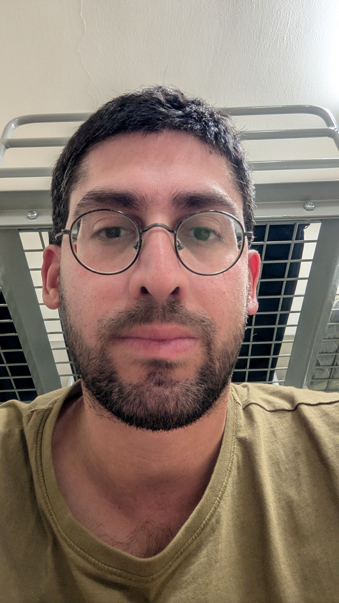

שלום, אני אופיר בן עמי. זהו האתר האישי שלי, שבו אני מספר על הדרך שעברתי, על הדברים שאני אוהב ועל השינוי המקצועי שאני עושה בחיים.
אני אופיר בן עמי, בן 36, מראשון לציון. אני עובד ברולדין מאז סוף שנת 2014. אני אוהב לטייל, להתאמן, ללכת לים ולבלות עם חברים. אני גם אוהב ללמוד דברים חדשים.
אני מאוד אוהב לטייל בארץ ובעולם, במיוחד בטבע, לראות נופים, לטייל בנחלים ובמעיינות, לטפס על הרים ולגלות מקומות חדשים. אני אוהב במיוחד לטייל עם חברים, לנסוע לאילת וללכת לים.
מעבר לזה, אני מאוד אוהב לבלות עם חברים, לאכול אוכל טעים, לשחק משחקי חברה וליהנות מזמן איכות עם האנשים שחשובים לי.
אחרי שסיימתי את לימודי התיכון, התגייסתי בשנת 2008 לשירות צבאי משמעותי במערך ההגנה האווירית בחיל האוויר, שבו שירתתי עד שנת 2011. תקופת השירות הצבאי הייתה תקופה משמעותית מאוד עבורי, שבה התפתחתי, התבגרתי, רכשתי ניסיון, הכרתי אנשים חשובים ויצרתי חברויות שנשארו איתי עד היום.
לאחר השחרור עבדתי במשך כשנה וחצי כמלצר בבית מלון במסגרת עבודה מועדפת. בהמשך עבדתי לתקופה קצרה ביקב כרמל בראשון לציון, בעבודה זמנית של אריזת בקבוקי יין לקראת חגי תשרי. בסוף שנת 2014 עברתי לתל אביב והתחלתי לעבוד ברולדין, שם אני עובד עד היום.
במהלך השנים ברולדין מילאתי מגוון רחב של תפקידים, ביניהם טבח, אופה, בריסטה, עובד שירות, אחמ"ש ומנהל סניף. בנוסף, עסקתי בהזמנות, ניהול מלאי ועבודה מול ספקים. העבודה הזו נתנה לי ניסיון רב בעבודה עם אנשים, אחריות, ניהול משימות, פתרון בעיות והתמודדות עם מצבים שונים בסביבה דינמית.
במקביל, מאז השחרור אני ממשיך לשרת במילואים במערך ההגנה האווירית, בסוללות מבצעיות, באימונים ובפעילויות שונות. במהלך השנים צברתי ניסיון נוסף בעבודה בצוות, אחריות, עבודה לפי נהלים, למידה של מערכות ותהליכים והתמודדות עם אתגרים.
אחרי שנים רבות שבהן עבדתי באותו מקום, הרגשתי שהגיע הזמן לעצור ולחשוב על העתיד שלי. הרגשתי שאני רוצה להתקדם ולהתפתח, גם מבחינה אישית וגם מבחינה מקצועית, ולא להישאר במקום שבו אני מרגיש שאני דורך במקום.
הבנתי שאני רוצה ללמוד משהו חדש, לרכוש מקצוע ולהתחיל פרק חדש בחיים שלי. רציתי למצוא תחום שיאתגר אותי, יאפשר לי ללמוד ולהתפתח, וייתן לי אפשרות לבנות לעצמי עתיד מקצועי חדש.
בשלב הזה התחלתי להתעניין בעולם ההייטק ולבדוק אילו תחומים יכולים להתאים לי. דרך חברים שעובדים בתחום נחשפתי לעולם בדיקות התוכנה וה-QA, והתחלתי להבין שזה תחום שיכול להתאים לאופי שלי ולדברים שאני טוב בהם, כמו יסודיות, תשומת לב לפרטים, סקרנות, למידה ופתרון בעיות.
לכן החלטתי לקחת אחריות על העתיד שלי, לצאת מאזור הנוחות, ללמוד מקצוע חדש ולעשות שינוי אמיתי בחיים. אני מקווה שבעזרת הלימודים וההשקעה שלי אוכל להשתלב בעתיד בתחום ה-QA והאוטומציה, להמשיך ללמוד ולהתפתח ולבנות לעצמי קריירה חדשה ומספקת.
אני חושב שיש כמה תכונות וניסיון שיכולים לעזור לי להשתלב בעולם ה-QA. אני אדם יסודי וקפדן, חשוב לי לשים לב לפרטים ולבצע דברים בצורה מסודרת. אני אוהב להבין איך דברים עובדים, וכשאני נתקל בבעיה אני מנסה למצוא את מקור הבעיה ולחשוב על פתרון.
במהלך השנים צברתי ניסיון בעבודה עם מערכות ותהליכים, עבודה לפי נהלים, פתרון בעיות ועבודה בצוות. בנוסף, אני אוהב ללמוד דברים חדשים ולהשתפר כל הזמן. אני מאמין שהניסיון שצברתי לאורך הדרך, יחד עם המוטיבציה שלי ללמוד ולהתפתח, יכולים לעזור לי להצליח בתחום ה-QA ולבנות לעצמי קריירה חדשה בעולם הטכנולוגיה.
המטרה שלי היא לסיים את הקורס בהצלחה, לרכוש ידע וכלים מקצועיים בתחום ה-QA והאוטומציה ולהשתמש בהם כדי להתחיל את הדרך המקצועית החדשה שלי.
אני רוצה להצליח למצוא את העבודה הראשונה שלי בתחום, להשתלב בסביבת עבודה טובה ומקצועית ולהמשיך ללמוד ולהתפתח גם בהמשך. חשוב לי להפוך לאיש מקצוע טוב, ללמוד מאנשים מנוסים ולהמשיך להשתפר לאורך הדרך.
אני מקווה שבעזרת הלימודים, ההתמדה וההשקעה שלי אוכל לבנות לעצמי קריירה חדשה בעולם הטכנולוגיה, להתפתח גם מבחינה מקצועית וגם מבחינה אישית, ולעשות משהו שאני נהנה ממנו ומרגיש שהוא משמעותי עבורי.